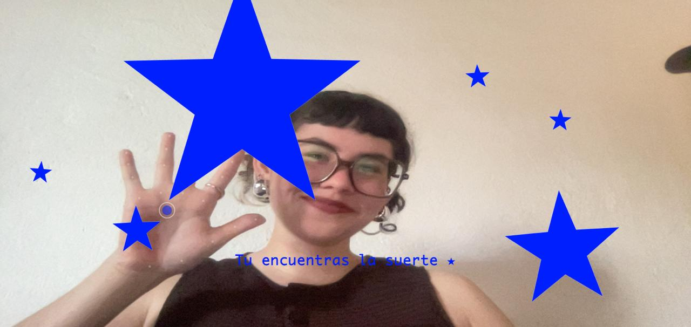
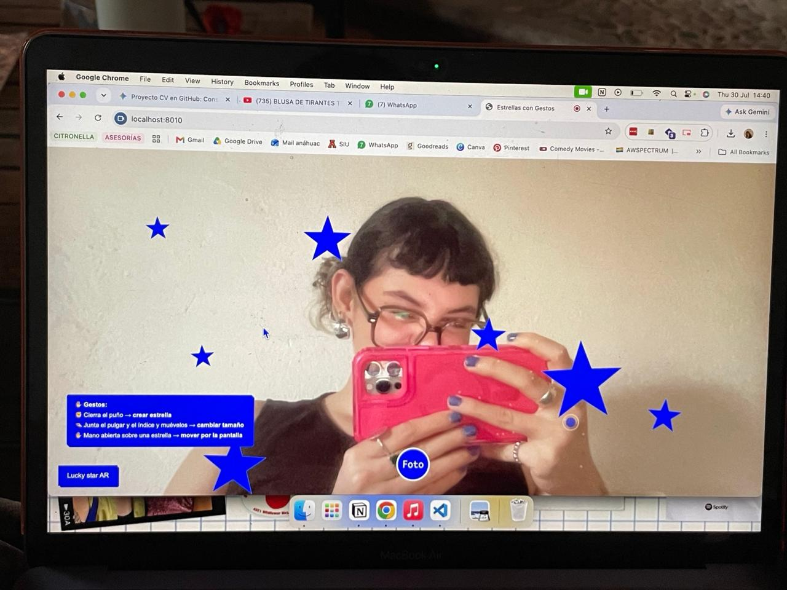

Página web con visión computacional para crear estrellas con las manos.
Ver proyecto ★

De mis cosas favoritas son las estrellas, tanto que tengo tatuadas varias... representan suerte para mí y quise interpretarlo de esta manera.
Cree una página web donde aparecen estrellas con tus manos y al final te puedes tomar una foto.
Me basé en el repositorio público de ______________ que construye proyectos usando visión computacional, utiliza js y la librería MediaPipe que ya trae configuraciones como la detección de manos,movimientosetc.
Hay un color que es de mis favoritos que es un tipo azul cobalto que hasta me sé su código HEX, es el #001fff y lo quise implementar en este proyecto.